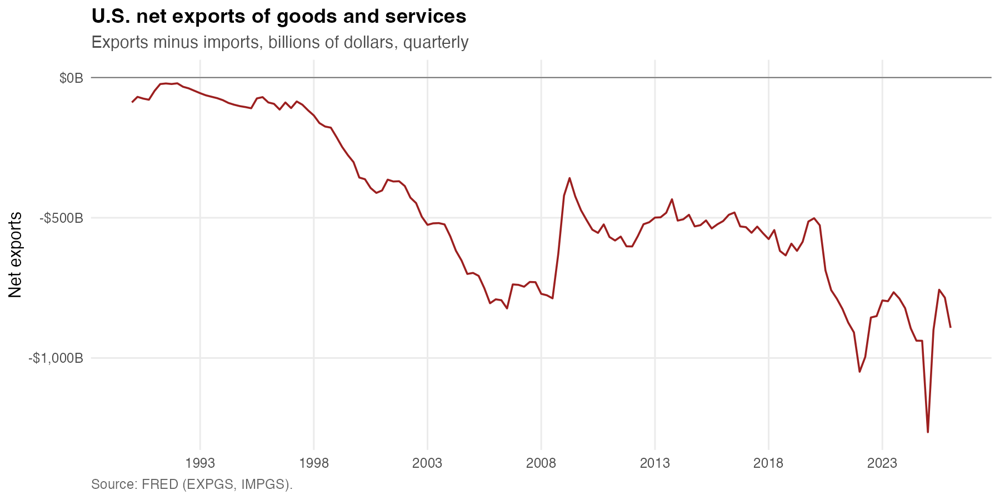
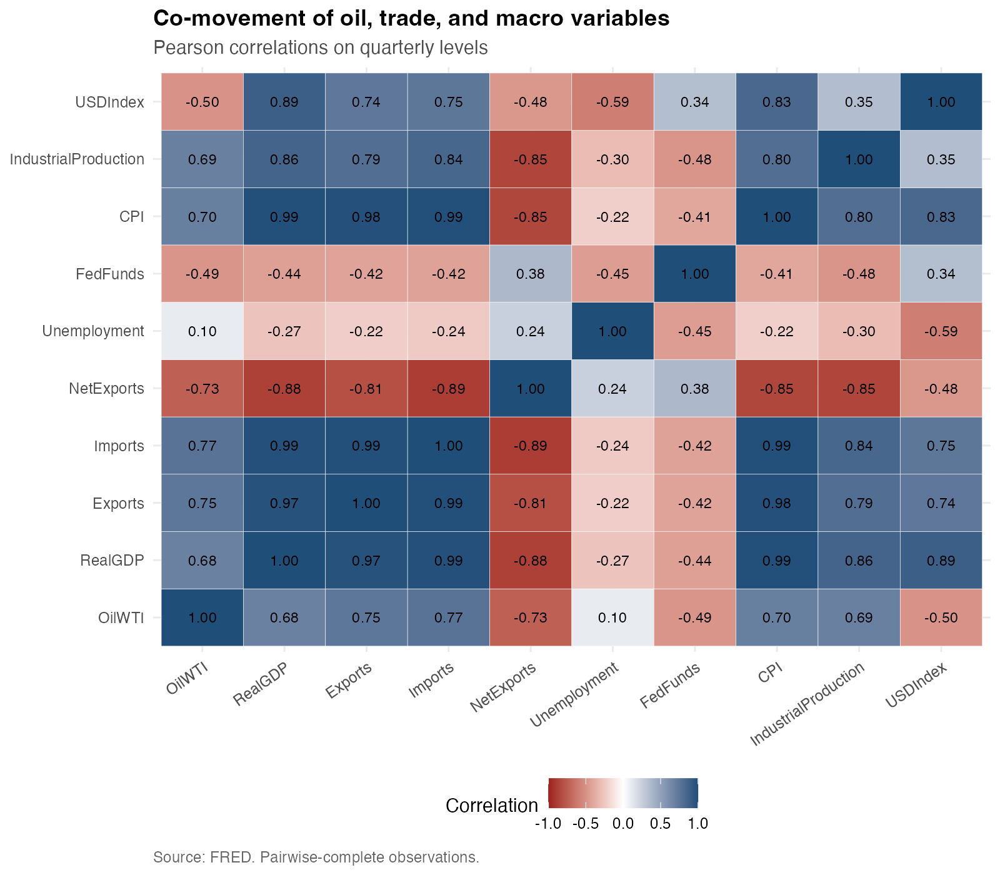
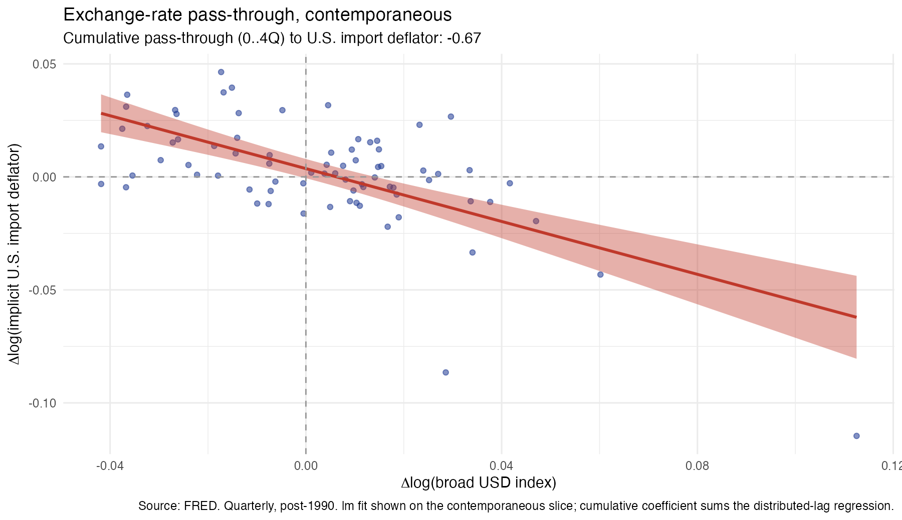
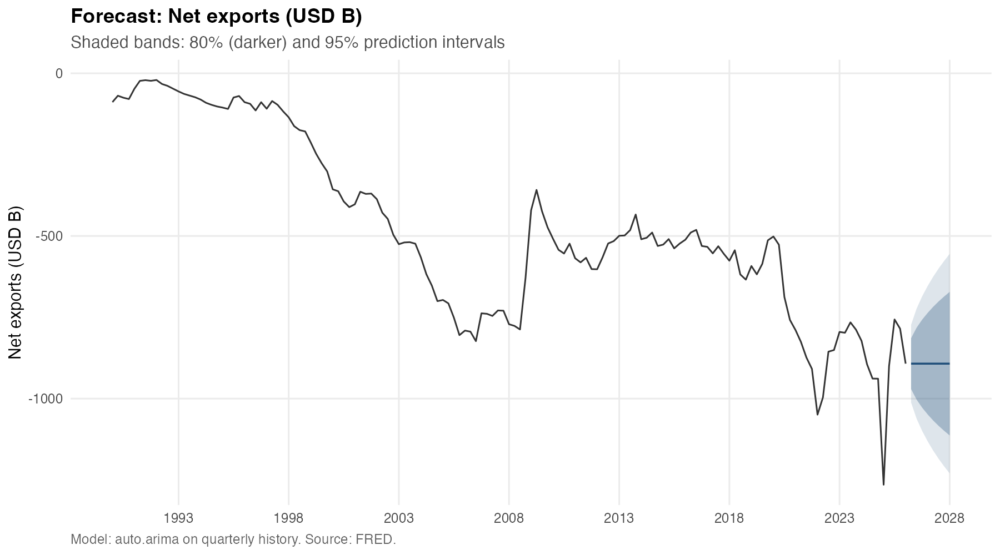
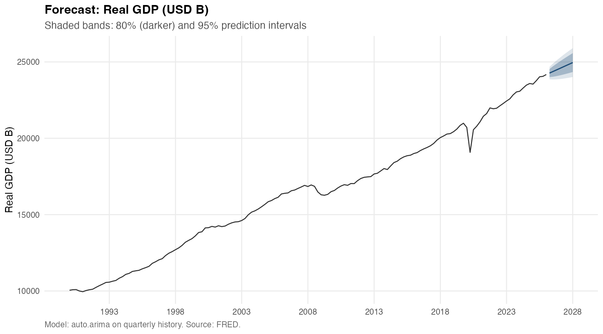
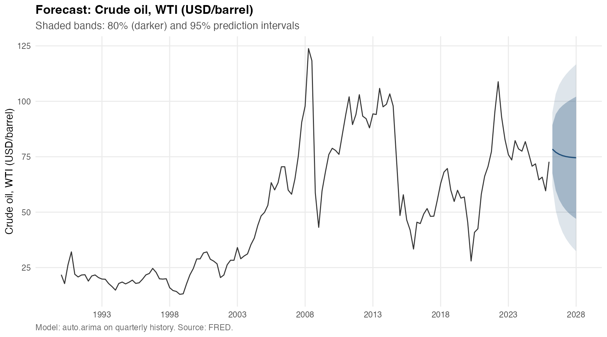

| Trade-price series | Cumulative pass-through (Σ β) | n (quarters) |
|---|---|---|
| ImportDeflator | -0.670 | 76 |
| ExportDeflator | -0.457 | 76 |
U.S. Macro, Trade, and Commodity Dashboard
Reproducible R workflow over FRED data — 13 series, quarterly panel with deflators and terms of trade, 8-quarter ARIMA forecasts, and an exchange-rate pass-through regression on U.S. trade prices.
Note
This dashboard is auto-rendered from the repository on every push to main via a GitHub Actions workflow. All figures and tables shown below are the exact artifacts checked into the repo under outputs/.
Overview
Thirteen FRED series — WTI crude oil, natural gas, copper, nominal and real exports/imports, real GDP, unemployment, the effective federal funds rate, CPI, industrial production, and the broad trade-weighted U.S. dollar index — are pulled, harmonized to a common quarterly grid (period-average aggregation), and combined into a wide analysis panel with derived measures: net exports (nominal and real), trade balance ratio, implicit import and export deflators, terms of trade, YoY / QoQ growth on every level series, and log / quarterly-change of WTI.
The same pipeline then:
- fits
forecast::auto.arima()to three structurally different target series — net exports, real GDP, and WTI crude oil — and produces an 8-quarter forecast with 80% / 95% prediction intervals for each, and - estimates a distributed-lag exchange-rate pass-through regression of Δlog(import / export deflator) on Δlog(broad USD) with 0–4 quarter lags and a CPI control, reporting the cumulative pass-through coefficient.
Indicator overview

Net exports

Co-movement

Exchange-rate pass-through to U.S. import prices

Cumulative 5-quarter pass-through coefficients (Σ β₀..β₄) from the distributed-lag regression:
A negative coefficient indicates a dollar appreciation passes through to lower U.S. import / export prices, as expected. Magnitudes well below one in absolute value reflect the well-documented incomplete pass-through characteristic of U.S. trade prices.
Forecasts (8 quarters, 80% / 95% prediction intervals)

Selected model: ARIMA(0,1,0) — a random-walk baseline. The flat point forecast and fanning intervals are an honest acknowledgment that quarterly U.S. net exports are close to a random walk and a univariate ARIMA has little signal to extract.

Selected model: ARIMA(0,1,1) with drift. The positive drift term captures trend growth; the MA(1) on first differences absorbs short-horizon noise.

Selected model: ARIMA(1,1,2). AR(1) coefficient ≈ 0.66 implies moderate persistence of quarterly shocks; the two MA terms absorb noise. The fan widens quickly — reflecting the well-known difficulty of multi-quarter commodity-price forecasting.
Forecast results
| Target | Date | Point | Lower 80 | Upper 80 | Lower 95 | Upper 95 |
|---|---|---|---|---|---|---|
| NetExports | 2026-04-01 | -892.43 | -970.45 | -814.42 | -1011.74 | -773.12 |
| NetExports | 2026-07-01 | -892.43 | -1002.76 | -782.10 | -1061.16 | -723.70 |
| NetExports | 2026-10-01 | -892.43 | -1027.55 | -757.31 | -1099.08 | -685.78 |
| NetExports | 2027-01-01 | -892.43 | -1048.46 | -736.41 | -1131.05 | -653.81 |
| NetExports | 2027-04-01 | -892.43 | -1066.87 | -717.99 | -1159.22 | -625.64 |
| NetExports | 2027-07-01 | -892.43 | -1083.52 | -701.34 | -1184.68 | -600.18 |
| NetExports | 2027-10-01 | -892.43 | -1098.84 | -686.03 | -1208.10 | -576.76 |
| NetExports | 2028-01-01 | -892.43 | -1113.09 | -671.78 | -1229.89 | -554.97 |
| RealGDP | 2026-04-01 | 24269.90 | 24004.47 | 24535.34 | 23863.95 | 24675.85 |
| RealGDP | 2026-07-01 | 24368.12 | 24029.04 | 24707.19 | 23849.54 | 24886.69 |
| RealGDP | 2026-10-01 | 24466.33 | 24066.97 | 24865.69 | 23855.56 | 25077.10 |
| RealGDP | 2027-01-01 | 24564.54 | 24112.87 | 25016.21 | 23873.77 | 25255.31 |
| RealGDP | 2027-04-01 | 24662.75 | 24164.23 | 25161.27 | 23900.33 | 25425.17 |
| RealGDP | 2027-07-01 | 24760.97 | 24219.63 | 25302.30 | 23933.07 | 25588.86 |
| RealGDP | 2027-10-01 | 24859.18 | 24278.18 | 25440.17 | 23970.62 | 25747.73 |
| RealGDP | 2028-01-01 | 24957.39 | 24339.27 | 25575.51 | 24012.06 | 25902.72 |
| OilWTI | 2026-04-01 | 78.43 | 67.57 | 89.28 | 61.83 | 95.02 |
| OilWTI | 2026-07-01 | 77.02 | 59.82 | 94.23 | 50.71 | 103.34 |
| OilWTI | 2026-10-01 | 76.10 | 55.63 | 96.57 | 44.79 | 107.41 |
| OilWTI | 2027-01-01 | 75.49 | 52.87 | 98.10 | 40.90 | 110.08 |
| OilWTI | 2027-04-01 | 75.09 | 50.88 | 99.29 | 38.07 | 112.10 |
| OilWTI | 2027-07-01 | 74.82 | 49.33 | 100.31 | 35.84 | 113.80 |
| OilWTI | 2027-10-01 | 74.64 | 48.06 | 101.23 | 33.99 | 115.30 |
| OilWTI | 2028-01-01 | 74.53 | 46.97 | 102.09 | 32.38 | 116.68 |
Model summary
| Target | Model | Term | Estimate | Std. error | z | p-value |
|---|---|---|---|---|---|---|
| NetExports | ARIMA(0,1,0) | aic | 1594.0000 | NA | NA | NA |
| NetExports | ARIMA(0,1,0) | bic | 1597.0000 | NA | NA | NA |
| NetExports | ARIMA(0,1,0) | sigma_sq | 3706.0000 | NA | NA | NA |
| NetExports | ARIMA(0,1,0) | log_likelihood | -796.0000 | NA | NA | NA |
| NetExports | ARIMA(0,1,0) | n_obs | 144.0000 | NA | NA | NA |
| RealGDP | ARIMA(0,1,1) with drift | ma1 | -0.2051 | 0.08697 | -2.359 | 0.0183400 |
| RealGDP | ARIMA(0,1,1) with drift | drift | 98.2100 | 13.65000 | 7.196 | 0.0000000 |
| RealGDP | ARIMA(0,1,1) with drift | aic | 1949.0000 | NA | NA | NA |
| RealGDP | ARIMA(0,1,1) with drift | bic | 1958.0000 | NA | NA | NA |
| RealGDP | ARIMA(0,1,1) with drift | sigma_sq | 42900.0000 | NA | NA | NA |
| RealGDP | ARIMA(0,1,1) with drift | log_likelihood | -971.3000 | NA | NA | NA |
| RealGDP | ARIMA(0,1,1) with drift | n_obs | 144.0000 | NA | NA | NA |
| OilWTI | ARIMA(1,1,2) | ar1 | 0.6598 | 0.15800 | 4.175 | 0.0000298 |
| OilWTI | ARIMA(1,1,2) | ma1 | -0.4297 | 0.15590 | -2.756 | 0.0058520 |
| OilWTI | ARIMA(1,1,2) | ma2 | -0.3596 | 0.07688 | -4.677 | 0.0000029 |
| OilWTI | ARIMA(1,1,2) | aic | 1029.0000 | NA | NA | NA |
| OilWTI | ARIMA(1,1,2) | bic | 1041.0000 | NA | NA | NA |
| OilWTI | ARIMA(1,1,2) | sigma_sq | 71.7200 | NA | NA | NA |
| OilWTI | ARIMA(1,1,2) | log_likelihood | -510.6000 | NA | NA | NA |
| OilWTI | ARIMA(1,1,2) | n_obs | 144.0000 | NA | NA | NA |
Pass-through regression — full coefficients
| target | cumulative_passthrough | n_obs | term | estimate | std.error | statistic | p.value | conf.low | conf.high | is_fx |
|---|---|---|---|---|---|---|---|---|---|---|
| ImportDeflator | -0.6700 | 76 | (Intercept) | -0.008875 | 0.001820 | -4.87700 | 0.0000067 | -0.012500 | -0.005244 | FALSE |
| ImportDeflator | -0.6700 | 76 | dlog_fx | -0.286800 | 0.053590 | -5.35100 | 0.0000011 | -0.393700 | -0.179900 | TRUE |
| ImportDeflator | -0.6700 | 76 | dlog_fx_lag1 | -0.257700 | 0.052410 | -4.91800 | 0.0000057 | -0.362300 | -0.153200 | TRUE |
| ImportDeflator | -0.6700 | 76 | dlog_fx_lag2 | -0.065710 | 0.053020 | -1.23900 | 0.2194000 | -0.171500 | 0.040060 | TRUE |
| ImportDeflator | -0.6700 | 76 | dlog_fx_lag3 | -0.063390 | 0.052120 | -1.21600 | 0.2281000 | -0.167400 | 0.040590 | TRUE |
| ImportDeflator | -0.6700 | 76 | dlog_fx_lag4 | 0.003558 | 0.049670 | 0.07164 | 0.9431000 | -0.095520 | 0.102600 | TRUE |
| ImportDeflator | -0.6700 | 76 | dlog_cpi | 2.058000 | 0.202800 | 10.15000 | 0.0000000 | 1.653000 | 2.462000 | FALSE |
| ExportDeflator | -0.4568 | 76 | (Intercept) | -0.005436 | 0.001682 | -3.23100 | 0.0018920 | -0.008792 | -0.002079 | FALSE |
| ExportDeflator | -0.4568 | 76 | dlog_fx | -0.159300 | 0.049540 | -3.21500 | 0.0019830 | -0.258100 | -0.060470 | TRUE |
| ExportDeflator | -0.4568 | 76 | dlog_fx_lag1 | -0.119100 | 0.048460 | -2.45900 | 0.0164600 | -0.215800 | -0.022460 | TRUE |
| ExportDeflator | -0.4568 | 76 | dlog_fx_lag2 | -0.081860 | 0.049020 | -1.67000 | 0.0994700 | -0.179600 | 0.015930 | TRUE |
| ExportDeflator | -0.4568 | 76 | dlog_fx_lag3 | -0.043960 | 0.048190 | -0.91220 | 0.3648000 | -0.140100 | 0.052180 | TRUE |
| ExportDeflator | -0.4568 | 76 | dlog_fx_lag4 | -0.052520 | 0.045920 | -1.14400 | 0.2566000 | -0.144100 | 0.039080 | TRUE |
| ExportDeflator | -0.4568 | 76 | dlog_cpi | 1.728000 | 0.187500 | 9.21800 | 0.0000000 | 1.354000 | 2.102000 | FALSE |
Descriptive summary
| label | n_obs | start | end | mean | sd | min | median | max |
|---|---|---|---|---|---|---|---|---|
| CPI | 146 | 1990-01-01 | 2026-04-01 | 211.900 | 53.390 | 128.000 | 212.600 | 332.40 |
| CopperGlobal | 137 | 1992-01-01 | 2026-01-01 | 5232.000 | 2894.000 | 1408.000 | 5668.000 | 12820.00 |
| Exports | 145 | 1990-01-01 | 2026-01-01 | 1710.000 | 839.700 | 538.200 | 1623.000 | 3524.00 |
| FedFunds | 146 | 1990-01-01 | 2026-04-01 | 2.890 | 2.330 | 0.060 | 2.967 | 8.25 |
| Imports | 145 | 1990-01-01 | 2026-01-01 | 2191.000 | 1079.000 | 613.900 | 2299.000 | 4558.00 |
| IndustrialProduction | 146 | 1990-01-01 | 2026-04-01 | 90.490 | 12.890 | 60.720 | 95.340 | 104.00 |
| NatGasHH | 118 | 1997-01-01 | 2026-04-01 | 4.091 | 2.042 | 1.705 | 3.445 | 12.21 |
| OilWTI | 146 | 1990-01-01 | 2026-04-01 | 52.000 | 28.950 | 12.930 | 48.810 | 123.80 |
| RealExports | 145 | 1990-01-01 | 2026-01-01 | 1708.000 | 638.000 | 654.400 | 1715.000 | 2769.00 |
| RealGDP | 145 | 1990-01-01 | 2026-01-01 | 16430.000 | 3995.000 | 9952.000 | 16560.000 | 24170.00 |
| RealImports | 145 | 1990-01-01 | 2026-01-01 | 2172.000 | 896.000 | 686.900 | 2312.000 | 4040.00 |
| USDIndex | 82 | 2006-01-01 | 2026-04-01 | 106.400 | 12.330 | 86.810 | 110.300 | 127.60 |
| Unemployment | 146 | 1990-01-01 | 2026-04-01 | 5.656 | 1.729 | 3.533 | 5.317 | 13.00 |
Methodology highlights
- Frequency alignment. Daily and monthly series are aggregated to quarterly period averages; quarterly series pass through with their date normalized to quarter-start.
- Derived measures. Nominal and real net exports, trade balance ratio, implicit import / export deflators, terms of trade, YoY / QoQ growth on every level series, and log / quarterly-change transforms for WTI.
- Forecast configuration.
auto.arima()withseasonal = TRUE,stepwise = FALSE,approximation = FALSE— i.e. the full model-space search rather than the fast heuristic. Horizon = 8 quarters, intervals at 80% and 95%. - Pass-through specification. OLS distributed-lag regression with 0–4 quarter lags of Δlog(broad USD) and a contemporaneous Δlog(CPI) control; cumulative pass-through is the sum of the five FX coefficients.
- Reproducibility. All paths via
here::here(); FRED API key via an environment variable (.Renviron.exampletemplate,.Renvirongit-ignored); a single command (source(here::here("scripts", "05_generate_outputs.R"))) rebuilds every artifact indata/processed/andoutputs/.
See docs/methodology.md, docs/data_dictionary.md, and docs/research_themes.md for the full versions.
Limitations
This is a baseline workflow, not a production forecasting system. Specifically:
- Univariate ARIMA only on the forecast side — no exogenous regressors, no multivariate structure (VAR / BVAR / factor models), no judgmental adjustment.
- Pass-through is single-equation OLS; a richer treatment would use IV, state-space pass-through with time-varying coefficients, or a structural model with strategic complementarities in price-setting.
- Quarterly aggregation discards intra-quarter dynamics in oil and FX.
- Unconditional forecasts; no scenario conditioning or structural-break handling (e.g. COVID).
- No automated refresh; reruns are manual.
Source: Federal Reserve Bank of St. Louis (FRED). Pipeline source: yullieyang/r-macro-trade-commodity-forecast.